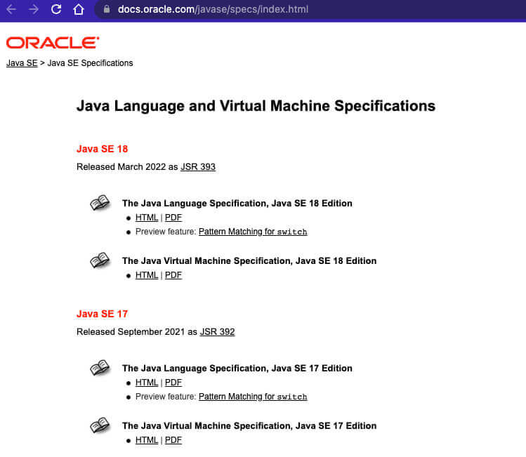

Java基础面试_上
原文链接： Java基础常见面试题总结(上) | JavaGuide(Java面试 + 学习指南)
基础概念与常识
Java语言有哪些特点
- 简单易学；
- 面向对象（面向对象）；
- 平台无关性（Java虚拟机实现平台无关性）；
- 支持多线程（C++语言没有内置的多线程机制，因此必须调用操作系统的多线程程序设计，而Java语言却提供了多线程支持）；
- 可靠性（具备异常处理和自动内存管理机制）；
- 安全性（Java语言本身的设计就提供了多重安全防护机制如访问权限修饰符、限制程序）
- 高效性（通过Just In Time编译器等技术的优化，Java语言的运行效率还是非常不错的）；
- 支持网络编程并且很方便；
- 编译与解释并存；
- ……
修正（参见：issue#544open in new window）：C++11 开始（2011 年的时候）,C++就引入了多线程库，在 windows、linux、macos 都可以使用
std::thread和std::async来创建线程。参考链接：http://www.cplusplus.com/reference/thread/thread/?kw=thread🌈 拓展一下：
“Write Once, Run Anywhere（一次编写，随处运行）”这句宣传口号，真心经典，流传了好多年！以至于，直到今天，依然有很多人觉得跨平台是 Java 语言最大的优势。实际上，跨平台已经不是 Java 最大的卖点了，各种 JDK 新特性也不是。目前市面上虚拟化技术已经非常成熟，比如你通过 Docker 就很容易实现跨平台了。在我看来，Java 强大的生态才是！
JVM vs JDK vs JRE
JVM
Java虚拟机（JVM）是运行Java字节码的虚拟机。JVM有针对不同系统的特定实现（Windows，Linux，macOS），目的是使用相同的字节码，它们都会给出相同的结果。字节码和不同系统的JVM实现是Java语言“一次编译，随处可以运行”的关键所在。

JVM 并不是只有一种！只要满足 JVM 规范，每个公司、组织或者个人都可以开发自己的专属 JVM。 也就是说我们平时接触到的 HotSpot VM 仅仅是是 JVM 规范的一种实现而已。
除了我们平时最常用的 HotSpot VM 外，还有 J9 VM、Zing VM、JRockit VM 等 JVM 。维基百科上就有常见 JVM 的对比：Comparison of Java virtual machinesopen in new window ，感兴趣的可以去看看。并且，你可以在 Java SE Specificationsopen in new window 上找到各个版本的 JDK 对应的 JVM 规范。

JDK 和 JRE
JDK（Java Development Kit），它是功能齐全的 Java SDK，是提供给开发者使用的，能够创建和编译 Java 程序。他包含了 JRE，同时还包含了编译 java 源码的编译器 javac 以及一些其他工具比如 javadoc（文档注释工具）、jdb（调试器）、jconsole（基于 JMX 的可视化监控⼯具）、javap（反编译工具）等等。
JRE（Java Runtime Environment） 是 Java 运行时环境。它是运行已编译 Java 程序所需的所有内容的集合，主要包括 Java 虚拟机（JVM）、Java 基础类库（Class Library）。
也就是说，JRE 是 Java 运行时环境，仅包含 Java 应用程序的运行时环境和必要的类库。而 JDK 则包含了 JRE，同时还包括了 javac、javadoc、jdb、jconsole、javap 等工具，可以用于 Java 应用程序的开发和调试。如果需要进行 Java 编程工作，比如编写和编译 Java 程序、使用 Java API 文档等，就需要安装 JDK。而对于某些需要使用 Java 特性的应用程序，如 JSP 转换为 Java Servlet、使用反射等，也需要 JDK 来编译和运行 Java 代码。因此，即使不打算进行 Java 应用程序的开发工作，也有可能需要安装 JDK。

什么是字节码?采用字节码的好处是什么?
在Java中，JVM可以理解的代码就叫做字节码（即扩展名为.class的文件），它不面向任何特定的处理器，只面向虚拟机。Java语言通过字节码的方式，在一定程度上解决了传统解释型语言执行效率低的问题，同时又保留了解释型语言可移植的特点。所以，Java程序运行时相对来说还是高效的（不过，和C++，Rust，Go等语言还是有一定差距的），而且，由于字节码并不针对一种特定的机器，因此，Java程序无须重新编译便可在多种不同操作系统的计算机上运行。
Java 程序从源代码到运行的过程如下图所示：

我们需要格外注意的是.class->机器码这一步。在这一步JVM类加载器首先加载字节码文件，然后通过解释器逐行解释执行，这种方式的执行速度会相对比较慢。而且，有些方法和代码块